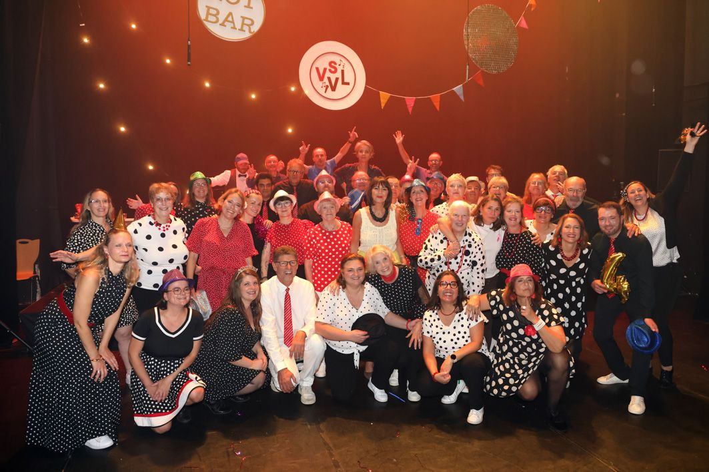

Prochain spectacle
Samedi 9 et dimanche 10 octobre 2027
Nouveau spectacle 2027
Espace Gérard Philipe, 22 rue Louis Lejeune, 59290 Wasquehal
Les réservations ne sont pas encore ouvertes : suivez-nous sur Facebook pour être prévenu·e.
Qui sommes-nous ?

Créée en 1986, Voix Si Voix La est une troupe chorale aujourd'hui installée à Wasquehal. En 2026, elle fête ses 40 ans !
Nous sommes une cinquantaine de choristes, de 30 ans à… (chut, on ne dira pas !), répartis en quatre pupitres et dirigés par notre cheffe de chœur, Caroline Bem. Chaque année, en octobre, nous montons un spectacle.
Envie de chanter avec nous ?
Chaque année, vers octobre-novembre, nous organisons des auditions pour quelques places.